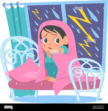

Matheo en la tormenta
Los días de lluvia eran uno de los momentos más difíciles para Matheo. Se negaba a salir de casa, incluso para ir al colegio. Prefería quedarse en su burbuja de seguridad, leyendo libros o jugando videojuegos, mientras escuchaba el sonido lejano de las gotas golpeando la ventana.
Su madre, preocupada, le decía: "No tengas miedo, Matheo, la lluvia solo moja un poco". Pero él no podía evitarlo, un escalofrío recorría su cuerpo al imaginar los truenos y relámpagos.